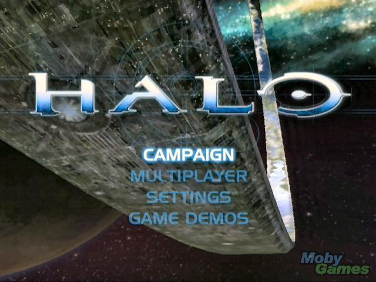
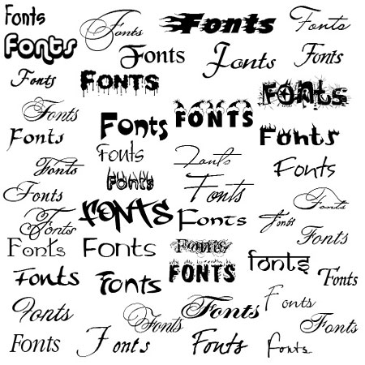
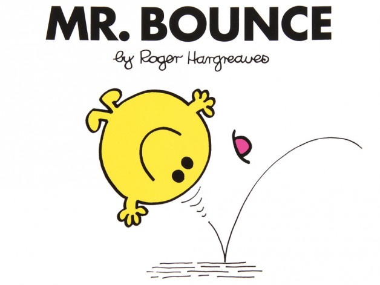

Meetings
This section includes all the 'after-action' reports of the Games Creators Club weekly meetings.
Meetings are held in the evenings at Kenilworth School during term time. The club currently has members from Year 7 to Year 11. If you are a student at Kenilworth School and you would be keen to join, let your form tutor know and they can put you in touch with the organisers.
Alternatively, you can follow along with the meetings and content using the articles posted here.
Have a Happy Christmas and New Year!
- Details
- Published on Tuesday, 16 December 2014 15:38
- Written by Edward Powell
- Hits: 565
Next GCC session will be Wednesday 14 January 2015! I hope you all have a great holiday and get lots of gadgety-gizmos to show us all in the New Year. And don’t forget – as far as we’re concerned if you can’t program it, you don’t own it.
{kind=link}
E
Adding a Title Screen – Introducing Game States
- Details
- Published on Tuesday, 25 November 2014 13:01
- Written by Edward Powell
- Hits: 698

In this session we are going to add a simple start screen. This will show a title image and text and the game will only begin when the spacebar is pressed.
To do this we are going to think about the concept of ‘Game States’ that is, making your game loop do different things depending on what state your game is currently in – waiting to start a game, game in progress, game just ended, game paused etc. Pretty much any game you can think of must manage states like these – from the simplest mobile app to the top end XBox AAA title.
The basic management of game state is simple. We need to create a variable that holds a number which represents each state we want: 0 = game start, 1 = game running etc. Inside our game loop we can now check what game state we are in from this number and run different update + draw code for each case. To swap game states, we simply change the value of this number, Simples!
Adding the game state variable
At the beginning of our game (before the game loop starts) add the following variable:
# Game State
# 0 = Game Start Screen
# 1 = Game Running
game_state = 0
Now we need to go into our game loop and make our game-play specific update and draw code only run if the game_state variable is equal to 1. If it is 0, then we will add some new update (check for spacebar press) and drawing (blit some instructions) code for the game title screen instead.
We can do this check neatly with an if..elif conditional. The elif is short for (else if). While you can only pair an if check with only one else, you can have as many elif’s as you like. This is what we need because we can use this system to check for as many game state values as we need. Just after the code where we fill the pressed_keys list (everything in the game loop before then will be needed regardless of the game state we are in) add your new conditional check:
# === Update Section ====
# According to game state
# Game start state
if game_state == 0:
if pressed_keys[pygame.K_SPACE]:
game_state = 1
# Game running state
elif game_state == 1:
...
...
The dots indicate where your previous code should go; be very careful with your indenting – remember, this is what determines which code is ‘inside’ each conditional block!
This code now runs two different updates, depending on the game state. In state 0 (game start screen) we just check for the spacebar press and set the state to 1 (game running) if we detect it. In game state 1, we just run our normal game update code as previously. We can repeat this later in the game loop for the drawing code too:
# According to game state:
# game start screen
if game_state == 0:
title_text = score_font.render("Press Spacebar to Start", 1, (255,255,255))
screen.blit(title_text, (width/2 - title_text.get_width()/2, height/2 - title_text.get_height()/2))
elif game_state == 1:
That’s it! Now you have conditional update & draw sections to your main game loop.
Next steps
First, have a go at improving your title screen:
- Blit a background image
- Create some new font objects with different sizes
- Add your game’s name as a title in a bigger font
- Adding some instructions in a smaller font
Now have a go at adding a Game Over game state and screen if either player manages to score 3 points more than their opposition.
Text & Fonts
- Details
- Published on Tuesday, 25 November 2014 11:53
- Written by Edward Powell
- Hits: 1207
In this session we’re going to add two scores to the game – one for each player. To do this, we are going to need to understand how to print text on the screen within our pygame app. We have used the print command previously in non-graphics (console) apps, but unfortunately this will not work inside our constantly looping pygame graphics window. Instead we need to render the text like a sprite and this will require several steps.
First we need to choose a font – the character style – that we want. We can used any installed system font that we like. You will probably already be familiar with the concept of the system font list from the down list in your word processor – such as Microsoft’s Word. Using pygame we can load in pretty much any font that you see in this list, but we do need to know the exact name of the one that we want.
Listing the available system fonts
In Idle you can quickly create a list of the available fonts on your system using the following code snippet:
import pygame
pygame.init()
for font in pygame.font.get_fonts():
print(font)
This will create a long list of font names for you to check against. For the purposes of this tutorial, I am going to choose ‘jokerman’ but you can choose whichever font name takes your fancy!
Creating a font object
Just like images that we use as the basis of our game sprites, we now need to create a font object in our game project that we can use for rendering. At the beginning of you game (before the main game loop) add the following:
# Create a font to render the score
score_font = pygame.font.SysFont("jokerman", 40)
This creates a pygame font object called ‘score_font’ based on the jokerman font at a size of 40 points (just as it would be in Word, this is fairly big text).
Rendering some text with the font object
In order to render some text on the screen we need to use our new font object to create a renderable surface object (like the ones we create from our sprite images). It is during this process that we can also set what the text is that we actually want to render, as well as its colour. We are going to need to do this with the current score each time we go around the game loop in the same area of your code that you are blitting the sprites - make sure you do it *after* your screen.fill(..) command or you will just erase it each time before you see it!
score_text = score_font.render("Score text here!", 1, (255,255,255))
The score_text object now contains a surface with out text rendered into it. The first argument is the actual text we want to write, the second argument enables anti-aliasing (smotth edges to the text letters) and the third argument is a colour in the usual (Red, Green, Blue) format. In the example above RGB are all at their maximum values, so this is the colour white. We can now blit this score_text surface object to the screen in the usual way.
screen.blit(score_text, (0,0))
The blit call is just the same as with the sprite objects so the second argument is a pair of X,Y coordinates indicating where on the screen we are going to position the text.
Onwards and Upwards
You now should have the basic tools you need to render text using any font, in any size or colour, wherever you want on the screen! Next you need to create two score integer (whole number) variables that you can add to as the game progresses and use them as the source of your text when creating the score text for blitting. Don’t forget you will need to convert your score integers into strings (word form) at this point:
score_text = score_font.render(str(score1), 1, (255,255,255))
Have a go at:
- Listing the system fonts using Idle
- Creating two score integers
- Rendering two scores at the top of the screen on the left and right for each player using a font object
Lets make a Pong!
- Details
- Published on Wednesday, 12 November 2014 14:50
- Written by Edward Powell
- Hits: 807
Now we have something bouncing, this can form the basis of a classic game – Pong – in which two players control a ‘paddle’ to bat the ball backwards and forwards. The ball will continue to bounce on the top and bottom of our screen, but we will need to make it only bounce at either end if the player manages to get their paddle to it. If they miss, then we need to chalk up a score.
Obviously we need to break this down in some bite-size chunks, so in this session we are going to start by simply:
- adding a paddle image
- moving it under arrow key control
- checking it for collisions with ball
We’ll modify the bouncy game you started last week, so begin by loading that into IDLE and re-saving it under a new name – “pongy.py”
Adding a Paddle Image
Just as we did for the ball sprite last week, we need to create our paddle.png file using paint.net. Make the image 64x196 pixels big, and save it in the same location as pongy.py. Now we can load the image into a surface object (which we will call ‘paddle1’) and store the rectangle bounds of this image in another recatangle object called ‘paddle1rect’. Add this code *before* the game loop:
# Same again for our player1 paddle
paddle1 = pygame.image.load("paddle.png")
paddle1rect = paddle1.get_rect()
Moving the paddle under keyboard control
There are two stages to this. First, each time we go through our game loop, we need to store a list of the currently pressed keys. Then we need to check if the keys we are interested in (arrow up & down) are in the pressed key list and, if so, move the paddle rectangle accordingly. This code goes at the beginning of the game loop:
# Get the current state of all the keyboard keys
pressed_keys = pygame.key.get_pressed()
# If the up or down arrows are pressed, move the paddle rect
if pressed_keys[pygame.K_UP]:
paddle1rect = paddle1rect.move(0, -1)
if pressed_keys[pygame.K_DOWN]:
paddle1rect = paddle1rect.move(0, 1)
Checking if our paddle has moved off the screen
If the paddle’s top is at the top of the screen, or its bottom has reached the bottom of the screen, we need to reset it back to a position within the screen edges:
# Reset the paddle position if it is beyond the top
# or bottom of the screen
if paddle1rect.top < 0:
paddle1rect.top = 0
if paddle1rect.bottom > height:
paddle1rect.bottom = height
Draw the paddle image using the paddle rectangle
Now the paddle rectangle is in the right place, we need to use it to blit our paddle image to that position. We do this a the end of the game loop before the display is flipped:
# Blit the paddles
screen.blit(paddle1, paddle1rect)
What next?
Well, now see if you can add paddle 2 for the other player and we have the beginnings of a proper game!
Graphics time!
- Details
- Published on Wednesday, 05 November 2014 13:52
- Written by Edward Powell
- Hits: 645
Over the last few weeks we’ve hopefully go the hang of variables (of different types), control structures (if, then etc.) and loops (while, do). Now it is time to put all these elements together to produce our first animating graphical display. In this example we are going to initialise pygame, create a window and bounce a sprite around inside it. The sprite can be any png image that you can create using Paint.net.
You will need to create a small-ish sprite image (say 64 x 64 pixels) and save it to the same location as the python file you are working on. Call the image file ‘sprite.png’, or modify the pygame.image.load png’, or modify the
The source code below is heavily # commented to explain each line. Do read these comments to help you understand what each bit is doing, but you don’t need to type the comment lines in yourself!
| import sys, pygame pygame.init()
# Chain together some variables # to store the screen size size = width, height = 1024, 1024
# Create a velocity List variable to store # movement values for [X, Y] in one place velocity = [1, -3]
# Create a Tuple to hold the red, green and blue # values to pruduce black (i.e. 0 for each) black = (0, 0, 0)
# Create the main game window and store it # in a variable called 'screen' screen = pygame.display.set_mode(size)
# Load the image we want to bounce # and store it in a variable called 'sprite' sprite = pygame.image.load("sprite.png")
# Get a bounding rectangle from the sprite spriterect = sprite.get_rect()
# Loop forever while True: # Check the event list for a 'quit' event for event in pygame.event.get(): if event.type == pygame.QUIT: sys.exit()
# Move the bounding rectangle according to the # current velocity spriterect = spriterect.move(velocity)
# Check of the bounding rectangle has touched the # edges of the window. if spriterect.left < 0 or spriterect.right > width: # Yes - touching sides of screen so reverse X # velocity value velocity[0] = -velocity[0] if spriterect.top < 0 or spriterect.bottom > height: # Yes - touching top/bottom of screen so # reverse the Y velocity value velocity[1] = -velocity[1]
# Draw everything # First clear the screen screen.fill(black) # Blit the sprite to the current rectangle position screen.blit(sprite, spriterect) # Flip the screen we've just drawn to the front pygame.display.flip() # end of while loop - go round the loop again! |